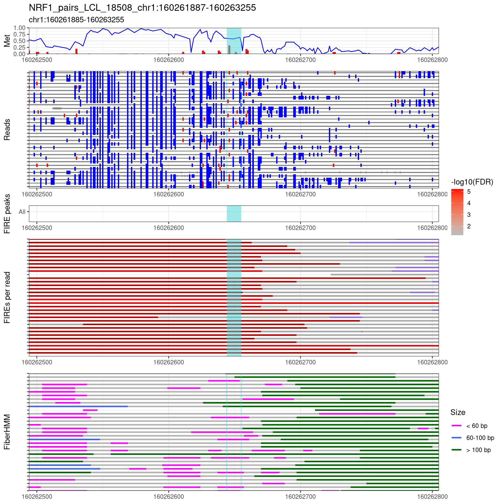
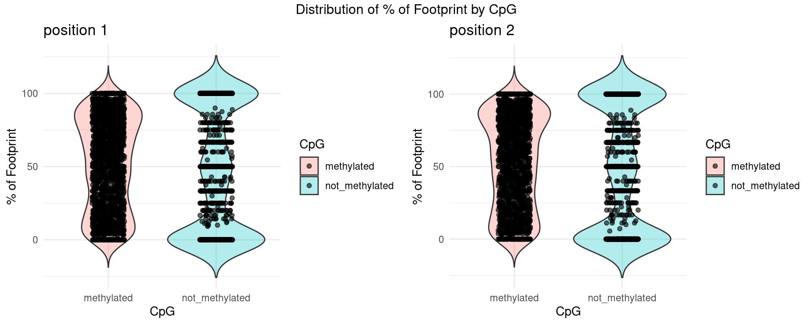

Checking how CpG methylation affects TF binding
XSun
2025-09-18
Last updated: 2025-09-18
Checks: 6 1
Knit directory: fiberseq/
This reproducible R Markdown analysis was created with workflowr (version 1.7.0). The Checks tab describes the reproducibility checks that were applied when the results were created. The Past versions tab lists the development history.
The R Markdown file has unstaged changes. To know which version of
the R Markdown file created these results, you’ll want to first commit
it to the Git repo. If you’re still working on the analysis, you can
ignore this warning. When you’re finished, you can run
wflow_publish to commit the R Markdown file and build the
HTML.
Great job! The global environment was empty. Objects defined in the global environment can affect the analysis in your R Markdown file in unknown ways. For reproduciblity it’s best to always run the code in an empty environment.
The command set.seed(20250831) was run prior to running
the code in the R Markdown file. Setting a seed ensures that any results
that rely on randomness, e.g. subsampling or permutations, are
reproducible.
Great job! Recording the operating system, R version, and package versions is critical for reproducibility.
Nice! There were no cached chunks for this analysis, so you can be confident that you successfully produced the results during this run.
Great job! Using relative paths to the files within your workflowr project makes it easier to run your code on other machines.
Great! You are using Git for version control. Tracking code development and connecting the code version to the results is critical for reproducibility.
The results in this page were generated with repository version efbd42b. See the Past versions tab to see a history of the changes made to the R Markdown and HTML files.
Note that you need to be careful to ensure that all relevant files for
the analysis have been committed to Git prior to generating the results
(you can use wflow_publish or
wflow_git_commit). workflowr only checks the R Markdown
file, but you know if there are other scripts or data files that it
depends on. Below is the status of the Git repository when the results
were generated:
Unstaged changes:
Modified: analysis/TF_co-acc_NRF1_cpg2.Rmd
Note that any generated files, e.g. HTML, png, CSS, etc., are not included in this status report because it is ok for generated content to have uncommitted changes.
These are the previous versions of the repository in which changes were
made to the R Markdown (analysis/TF_co-acc_NRF1_cpg2.Rmd)
and HTML (docs/TF_co-acc_NRF1_cpg2.html) files. If you’ve
configured a remote Git repository (see ?wflow_git_remote),
click on the hyperlinks in the table below to view the files as they
were in that past version.
| File | Version | Author | Date | Message |
|---|---|---|---|---|
| Rmd | efbd42b | XSun | 2025-09-18 | updae |
library(knitr)
library(data.table)
library(reshape2)
library(GenomicRanges)
library(ggplot2)
library(tidyverse)
library(gridExtra)
library(Biostrings)
library(gridExtra)
library(purrr)
source("/project/spott/kevinluo/Fiber_seq/fiberhub/code/process_fiberseq_data.R")
source("/project/spott/kevinluo/Fiber_seq/fiberhub/code/plots.R")
DT::datatable(matrix())Introduction
We check how CpG methylation affects TF binding here.
We focus on the regions that only contains one NRF1 motif site.
Details for NRF1 motif: https://jaspar.elixir.no/matrix/MA0506.1/
We just take the consensus into consideration, there are 2 CpG sites that may be methylated: position 2 and position 8. On the opposite strand, they are position 3 and position 9.

Examples
We illustrate the workflow using several examples.
TF1 <- "NRF1"
# ---- Load motif sites ----
motif_sites <- readRDS(file.path(
"/project/spott/kevinluo/Fiber_seq/processed_data/hg38/TFs",
paste0(TF1, ".GM12878.sites.chip.labels.rds"))
) %>% filter(chip_label == 1, !is.na(start))
gr_motif <- GRanges(
seqnames = motif_sites$chr,
ranges = IRanges(start = motif_sites$start + 100,
end = motif_sites$end - 100),
site = motif_sites$name
)
# ---- Find motif pairs ----
dist_cutoff_large <- 300L
dist_cutoff_small <- 0L
hits <- findOverlaps(gr_motif, gr_motif, ignore.strand = TRUE, maxgap = dist_cutoff_large)
q <- queryHits(hits); s <- subjectHits(hits)
keep <- q < s
q <- q[keep]; s <- s[keep]
d <- distance(gr_motif[q], gr_motif[s])
sel <- d >= dist_cutoff_small & d <= dist_cutoff_large
q <- q[sel]; s <- s[sel]; d <- d[sel]
df_close <- data.frame(
motif1_site = gr_motif[q]$site,
motif2_site = gr_motif[s]$site,
distance = as.integer(d)
)
# ---- Motifs involved in "close" pairs ----
motifs_with_neighbors <- unique(c(df_close$motif1_site, df_close$motif2_site))
# ---- Opposite case: motifs without neighbors ----
singleton_motifs <- motif_sites %>%
filter(!(name %in% motifs_with_neighbors))
df_final <- singleton_motifs %>%
group_by(chr, name, start, end) %>%
ungroup() %>%
transmute(
chr,
start = trimws(format(floor(start / 100) * 100 - 500, scientific = FALSE)),
end = trimws(format(ceiling(end / 100) * 100 + 500, scientific = FALSE))
) %>%
mutate(chr_num = as.numeric(gsub("chr", "", chr))) %>%
arrange(chr_num, as.numeric(start)) %>%
select(-chr_num)
df_final$id <- paste0(df_final$chr,"-", df_final$start, "-",df_final$end)
df_final <- df_final[!duplicated(df_final$id),]
out_dir="/project/xinhe/xsun/fiberseq/1.TFs/plot_region/results/NRF1_singleton/"
sample_name="LCL_18508"
rid_motifsite_mat <- readRDS("/project/xinhe/xsun/fiberseq/1.TFs/results/NRF1_singleton_cpg/rid_motifsite_mat_sites_select.RDS")
rid_motifsite_combined <- readRDS("/project/xinhe/xsun/fiberseq/1.TFs/results/NRF1_singleton_cpg/rid_motifsite_combined_sites_select.RDS")
rid_motifsite_methy <- readRDS("/project/xinhe/xsun/fiberseq/1.TFs/results/NRF1_singleton_cpg/rid_motifsite_methy_sites_select.RDS")
sites_selected <- readRDS("/project/xinhe/xsun/fiberseq/1.TFs/results/NRF1_singleton_cpg/sites_select.RDS")
RIDs_access.df_all <- readRDS("/project/xinhe/xsun/fiberseq/1.TFs/results/NRF1_singleton_cpg/RIDs_access.df_sites_select.RDS")
cpg_status_all <- readRDS("/project/xinhe/xsun/fiberseq/1.TFs/results/NRF1_singleton_cpg/cpg_status_all_sites_select.RDS")
contingency_table_pos1_all <- readRDS("/project/xinhe/xsun/fiberseq/1.TFs/results/NRF1_singleton_cpg/contingency_table_pos1.RDS")
contingency_table_pos2_all <- readRDS("/project/xinhe/xsun/fiberseq/1.TFs/results/NRF1_singleton_cpg/contingency_table_pos2.RDS")
prop_col_pos1_all <- readRDS("/project/xinhe/xsun/fiberseq/1.TFs/results/NRF1_singleton_cpg/contingency_prop_col_pos1.RDS")
prop_col_pos2_all <- readRDS("/project/xinhe/xsun/fiberseq/1.TFs/results/NRF1_singleton_cpg/contingency_prop_col_pos2.RDS")site10635
site <- "site10635"
index_region <- which(singleton_motifs$name == site)
test_range_str <- paste0(df_final$chr[index_region],":",df_final$start[index_region],"-",df_final$end[index_region])
plot_name <- paste0(TF1,"_pairs_",sample_name,"_",test_range_str)
result_dir <- paste0(out_dir, "/", plot_name, "/parsed")
region <- get_region(result_dir)
subtitle <- sprintf("%s:%s-%s", region$chr, region$start, region$end)
# motif coordinates
start <- singleton_motifs$start[index_region] + 100
end <- singleton_motifs$end[index_region] -100
region_plot <- list(chr = df_final$chr[index_region],
start = start - 150,
end = end + 150)
res <- try(get_region_result(result_dir,
filter_fire_reads = FALSE,
cover_region_only = FALSE,
select_A_only = FALSE,
split_haplotype = FALSE,
fiberHMM_size_breaks = c(60,100),
fiberHMM_cols = c("magenta","royalblue","darkgreen"),
highlight_window = data.frame(start=start, end=end),
color_highlight_window = "#44d6d8ff",
plot_name = plot_name,
# cluster = "fiberHMM_configs",
# cluster_regions = cluster_regions,
show_RIDs = F,
region = region_plot,
subtitle = subtitle,
verbose = T)
)Get region result… Loading FiberHMM result from /project/xinhe/xsun/fiberseq/1.TFs/plot_region/results/NRF1_singleton//NRF1_pairs_LCL_18508_chr6:36546800-36548100/parsed fiberHMM size levels: < 60 bp 60-100 bp > 100 bp Clustering reads… 34 reads. highlight windows: start end 1 36547473 36547484
gg <- res$gg
print(cowplot::plot_grid(
gg$pileup,
gg$dimelo_reads,
gg$fire_fdr,
gg$fire_reads,
gg$fiberHMM,
ncol = 1,
rel_heights = c(4,8,2,8,8),
align = "v",
axis = "b"
))
cat("We identify CpG positions within this motif. The CpG positions are extracted from the corresponding .fa files. \n")We identify CpG positions within this motif. The CpG positions are extracted from the corresponding .fa files.
cat("We restrict the analysis to reads without nucleosome footprints, since transcription factors cannot bind when the motif is occupied by a nucleosome")We restrict the analysis to reads without nucleosome footprints, since transcription factors cannot bind when the motif is occupied by a nucleosome
DT::datatable(rid_motifsite_mat[[site]],caption = htmltools::tags$caption( style = 'caption-side: left; text-align: left; color:black; font-size:150% ;',paste0('CpG positions in the motif for each read --',site)),options = list(pageLength = 10) )cat("We then retrieve methylation information from res$read. \n")We then retrieve methylation information from res$read.
DT::datatable(rid_motifsite_methy[[site]],caption = htmltools::tags$caption( style = 'caption-side: left; text-align: left; color:black; font-size:150% ;',paste0('Methylation quality score for each read --',site)),options = list(pageLength = 10) )cat("By combining the CpG position matrix with the methylation quality matrix, we annotate methylated sites as mC.\n")By combining the CpG position matrix with the methylation quality matrix, we annotate methylated sites as mC.
DT::datatable(rid_motifsite_combined[[site]],caption = htmltools::tags$caption( style = 'caption-side: left; text-align: left; color:black; font-size:150% ;',paste0('Methylation annotation for each read --',site)),options = list(pageLength = 10) )cat("We summarize the methylation and TF footprint status for each read\n")We summarize the methylation and TF footprint status for each read
DT::datatable(RIDs_access.df_all[[site]],caption = htmltools::tags$caption( style = 'caption-side: left; text-align: left; color:black; font-size:150% ;',paste0('Methylation and TF footprint status for each read --',site)),options = list(pageLength = 10) )cat("For position 1, we have\n")For position 1, we have
kable(as.matrix(contingency_table_pos1_all[[site]]),
caption = paste("Contingency table for", site))| CpG_pos1_FALSE | CpG_pos1_TRUE | |
|---|---|---|
| TF_FALSE | 2 | 0 |
| TF_TRUE | 13 | 1 |
cat("The proportion of TF footprint in different methylation groups")The proportion of TF footprint in different methylation groups
kable(as.matrix(prop_col_pos1_all[[site]]),
caption = paste("Proportion table for", site))| CpG_pos1_FALSE | CpG_pos1_TRUE | |
|---|---|---|
| TF_FALSE | 13.33 | 0 |
| TF_TRUE | 86.67 | 100 |
cat("For position 2, we have\n")For position 2, we have
kable(as.matrix(contingency_table_pos2_all[[site]]),
caption = paste("Contingency table for", site))| CpG_pos1_FALSE | CpG_pos1_TRUE | |
|---|---|---|
| TF_FALSE | 1 | 1 |
| TF_TRUE | 13 | 1 |
cat("The proportion of TF footprint in different methylation groups")The proportion of TF footprint in different methylation groups
kable(as.matrix(prop_col_pos2_all[[site]]),
caption = paste("Proportion table for", site))| CpG_pos2_FALSE | CpG_pos2_TRUE | |
|---|---|---|
| TF_FALSE | 7.14 | 50 |
| TF_TRUE | 92.86 | 50 |
site11369
site <- "site11369"
index_region <- which(singleton_motifs$name == site)
test_range_str <- paste0(df_final$chr[index_region],":",df_final$start[index_region],"-",df_final$end[index_region])
plot_name <- paste0(TF1,"_pairs_",sample_name,"_",test_range_str)
result_dir <- paste0(out_dir, "/", plot_name, "/parsed")
region <- get_region(result_dir)
subtitle <- sprintf("%s:%s-%s", region$chr, region$start, region$end)
# motif coordinates
start <- singleton_motifs$start[index_region] + 100
end <- singleton_motifs$end[index_region] -100
region_plot <- list(chr = df_final$chr[index_region],
start = start - 150,
end = end + 150)
res <- try(get_region_result(result_dir,
filter_fire_reads = FALSE,
cover_region_only = FALSE,
select_A_only = FALSE,
split_haplotype = FALSE,
fiberHMM_size_breaks = c(60,100),
fiberHMM_cols = c("magenta","royalblue","darkgreen"),
highlight_window = data.frame(start=start, end=end),
color_highlight_window = "#44d6d8ff",
plot_name = plot_name,
# cluster = "fiberHMM_configs",
# cluster_regions = cluster_regions,
show_RIDs = F,
region = region_plot,
subtitle = subtitle,
verbose = T)
)Get region result… Loading FiberHMM result from /project/xinhe/xsun/fiberseq/1.TFs/plot_region/results/NRF1_singleton//NRF1_pairs_LCL_18508_chr6:151451500-151452800/parsed fiberHMM size levels: < 60 bp 60-100 bp > 100 bp Clustering reads… 34 reads. highlight windows: start end 1 151452155 151452166
gg <- res$gg
print(cowplot::plot_grid(
gg$pileup,
gg$dimelo_reads,
gg$fire_fdr,
gg$fire_reads,
gg$fiberHMM,
ncol = 1,
rel_heights = c(4,8,2,8,8),
align = "v",
axis = "b"
))cat("We identify CpG positions within this motif. The CpG positions are extracted from the corresponding .fa files. \n")We identify CpG positions within this motif. The CpG positions are extracted from the corresponding .fa files.
cat("We restrict the analysis to reads without nucleosome footprints, since transcription factors cannot bind when the motif is occupied by a nucleosome")We restrict the analysis to reads without nucleosome footprints, since transcription factors cannot bind when the motif is occupied by a nucleosome
DT::datatable(rid_motifsite_mat[[site]],caption = htmltools::tags$caption( style = 'caption-side: left; text-align: left; color:black; font-size:150% ;',paste0('CpG positions in the motif for each read --',site)),options = list(pageLength = 10) )cat("We then retrieve methylation information from res$read. \n")We then retrieve methylation information from res$read.
DT::datatable(rid_motifsite_methy[[site]],caption = htmltools::tags$caption( style = 'caption-side: left; text-align: left; color:black; font-size:150% ;',paste0('Methylation quality score for each read --',site)),options = list(pageLength = 10) )cat("By combining the CpG position matrix with the methylation quality matrix, we annotate methylated sites as mC.\n")By combining the CpG position matrix with the methylation quality matrix, we annotate methylated sites as mC.
DT::datatable(rid_motifsite_combined[[site]],caption = htmltools::tags$caption( style = 'caption-side: left; text-align: left; color:black; font-size:150% ;',paste0('Methylation annotation for each read --',site)),options = list(pageLength = 10) )cat("We summarize the methylation and TF footprint status for each read\n")We summarize the methylation and TF footprint status for each read
DT::datatable(RIDs_access.df_all[[site]],caption = htmltools::tags$caption( style = 'caption-side: left; text-align: left; color:black; font-size:150% ;',paste0('Methylation and TF footprint status for each read --',site)),options = list(pageLength = 10) )cat("For position 1, we have\n")For position 1, we have
kable(as.matrix(contingency_table_pos1_all[[site]]),
caption = paste("Contingency table for", site))| CpG_pos1_FALSE | CpG_pos1_TRUE | |
|---|---|---|
| TF_FALSE | 5 | 0 |
| TF_TRUE | 22 | 2 |
cat("The proportion of TF footprint in different methylation groups")The proportion of TF footprint in different methylation groups
kable(as.matrix(prop_col_pos1_all[[site]]),
caption = paste("Proportion table for", site))| CpG_pos1_FALSE | CpG_pos1_TRUE | |
|---|---|---|
| TF_FALSE | 18.52 | 0 |
| TF_TRUE | 81.48 | 100 |
cat("For position 2, we have\n")For position 2, we have
kable(as.matrix(contingency_table_pos2_all[[site]]),
caption = paste("Contingency table for", site))| CpG_pos1_FALSE | CpG_pos1_TRUE | |
|---|---|---|
| TF_FALSE | 5 | 0 |
| TF_TRUE | 24 | 0 |
cat("The proportion of TF footprint in different methylation groups")The proportion of TF footprint in different methylation groups
kable(as.matrix(prop_col_pos2_all[[site]]),
caption = paste("Proportion table for", site))| CpG_pos2_FALSE | CpG_pos2_TRUE | |
|---|---|---|
| TF_FALSE | 17.24 | NaN |
| TF_TRUE | 82.76 | NaN |
site27125
site <- "site27125"
index_region <- which(singleton_motifs$name == site)
test_range_str <- paste0(df_final$chr[index_region],":",df_final$start[index_region],"-",df_final$end[index_region])
plot_name <- paste0(TF1,"_pairs_",sample_name,"_",test_range_str)
result_dir <- paste0(out_dir, "/", plot_name, "/parsed")
region <- get_region(result_dir)
subtitle <- sprintf("%s:%s-%s", region$chr, region$start, region$end)
# motif coordinates
start <- singleton_motifs$start[index_region] + 100
end <- singleton_motifs$end[index_region] -100
region_plot <- list(chr = df_final$chr[index_region],
start = start - 150,
end = end + 150)
res <- try(get_region_result(result_dir,
filter_fire_reads = FALSE,
cover_region_only = FALSE,
select_A_only = FALSE,
split_haplotype = FALSE,
fiberHMM_size_breaks = c(60,100),
fiberHMM_cols = c("magenta","royalblue","darkgreen"),
highlight_window = data.frame(start=start, end=end),
color_highlight_window = "#44d6d8ff",
plot_name = plot_name,
# cluster = "fiberHMM_configs",
# cluster_regions = cluster_regions,
show_RIDs = F,
region = region_plot,
subtitle = subtitle,
verbose = T)
)Get region result… Loading FiberHMM result from /project/xinhe/xsun/fiberseq/1.TFs/plot_region/results/NRF1_singleton//NRF1_pairs_LCL_18508_chr18:2906300-2907600/parsed fiberHMM size levels: < 60 bp 60-100 bp > 100 bp Clustering reads… 36 reads. highlight windows: start end 1 2906988 2906999
gg <- res$gg
print(cowplot::plot_grid(
gg$pileup,
gg$dimelo_reads,
gg$fire_fdr,
gg$fire_reads,
gg$fiberHMM,
ncol = 1,
rel_heights = c(4,8,2,8,8),
align = "v",
axis = "b"
))cat("We identify CpG positions within this motif. The CpG positions are extracted from the corresponding .fa files. \n")We identify CpG positions within this motif. The CpG positions are extracted from the corresponding .fa files.
cat("We restrict the analysis to reads without nucleosome footprints, since transcription factors cannot bind when the motif is occupied by a nucleosome")We restrict the analysis to reads without nucleosome footprints, since transcription factors cannot bind when the motif is occupied by a nucleosome
DT::datatable(rid_motifsite_mat[[site]],caption = htmltools::tags$caption( style = 'caption-side: left; text-align: left; color:black; font-size:150% ;',paste0('CpG positions in the motif for each read --',site)),options = list(pageLength = 10) )cat("We then retrieve methylation information from res$read. \n")We then retrieve methylation information from res$read.
DT::datatable(rid_motifsite_methy[[site]],caption = htmltools::tags$caption( style = 'caption-side: left; text-align: left; color:black; font-size:150% ;',paste0('Methylation quality score for each read --',site)),options = list(pageLength = 10) )cat("By combining the CpG position matrix with the methylation quality matrix, we annotate methylated sites as mC.\n")By combining the CpG position matrix with the methylation quality matrix, we annotate methylated sites as mC.
DT::datatable(rid_motifsite_combined[[site]],caption = htmltools::tags$caption( style = 'caption-side: left; text-align: left; color:black; font-size:150% ;',paste0('Methylation annotation for each read --',site)),options = list(pageLength = 10) )cat("We summarize the methylation and TF footprint status for each read\n")We summarize the methylation and TF footprint status for each read
DT::datatable(RIDs_access.df_all[[site]],caption = htmltools::tags$caption( style = 'caption-side: left; text-align: left; color:black; font-size:150% ;',paste0('Methylation and TF footprint status for each read --',site)),options = list(pageLength = 10) )cat("For position 1, we have\n")For position 1, we have
kable(as.matrix(contingency_table_pos1_all[[site]]),
caption = paste("Contingency table for", site))| CpG_pos1_FALSE | CpG_pos1_TRUE | |
|---|---|---|
| TF_FALSE | 13 | 1 |
| TF_TRUE | 0 | 0 |
cat("The proportion of TF footprint in different methylation groups")The proportion of TF footprint in different methylation groups
kable(as.matrix(prop_col_pos1_all[[site]]),
caption = paste("Proportion table for", site))| CpG_pos1_FALSE | CpG_pos1_TRUE | |
|---|---|---|
| TF_FALSE | 100 | 100 |
| TF_TRUE | 0 | 0 |
cat("For position 2, we have\n")For position 2, we have
kable(as.matrix(contingency_table_pos2_all[[site]]),
caption = paste("Contingency table for", site))| CpG_pos1_FALSE | CpG_pos1_TRUE | |
|---|---|---|
| TF_FALSE | 13 | 1 |
| TF_TRUE | 0 | 0 |
cat("The proportion of TF footprint in different methylation groups")The proportion of TF footprint in different methylation groups
kable(as.matrix(prop_col_pos2_all[[site]]),
caption = paste("Proportion table for", site))| CpG_pos2_FALSE | CpG_pos2_TRUE | |
|---|---|---|
| TF_FALSE | 100 | 100 |
| TF_TRUE | 0 | 0 |
Summary for each methylation group
We only consider the motifs with at least one CpGm read.
We did paired t-test to test if the footprint detected proportion are different.
contingency_prop_col <- readRDS("/project/xinhe/xsun/fiberseq/1.TFs/results/NRF1_singleton_cpg/contingency_prop_col_pos1_sites_select.RDS")
# extract the 2nd row of each table if it's valid
mat <- contingency_prop_col %>%
imap_dfr(~ {
if (all(is.nan(.x[,2]))) return(NULL)
tibble(
methylated = .x[2, 1],
not_methylated = .x[2, 2],
motif = .y
)
})
# run paired t-test
t <- t.test(mat$methylated, mat$not_methylated, paired = TRUE)
pval_label <- paste0("paired t-test p = \n", signif(t$p.value, 3))
# long format for plotting
df_long <- mat %>%
pivot_longer(cols = c(methylated, not_methylated),
names_to = "CpG",
values_to = "% of Footprint")
# plot
p1 <- ggplot(df_long, aes(x = CpG, y = `% of Footprint`, fill = CpG)) +
geom_boxplot() +
theme_minimal() +
ggtitle("Position 1") +
annotate("text", x = 1.5,
y = max(df_long$`% of Footprint`, na.rm = TRUE) * 1.05,
label = pval_label)
contingency_prop_col <- readRDS("/project/xinhe/xsun/fiberseq/1.TFs/results/NRF1_singleton_cpg/contingency_prop_col_pos2_sites_select.RDS")
# extract the 2nd row of each table if it's valid
mat <- contingency_prop_col %>%
imap_dfr(~ {
if (all(is.nan(.x[,2]))) return(NULL)
tibble(
methylated = .x[2, 1],
not_methylated = .x[2, 2],
motif = .y
)
})
# run paired t-test
t <- t.test(mat$methylated, mat$not_methylated, paired = TRUE)
pval_label <- paste0("paired t-test p = \n", signif(t$p.value, 3))
# long format for plotting
df_long <- mat %>%
pivot_longer(cols = c(methylated, not_methylated),
names_to = "CpG",
values_to = "% of Footprint")
# plot
p2 <- ggplot(df_long, aes(x = CpG, y = `% of Footprint`, fill = CpG)) +
geom_boxplot() +
theme_minimal() +
ggtitle("Position 2") +
annotate("text", x = 1.5,
y = max(df_long$`% of Footprint`, na.rm = TRUE) * 1.05,
label = pval_label)
grid.arrange(p1, p2, ncol = 2)
# contingency_table <- readRDS("/project/xinhe/xsun/fiberseq/1.TFs/results/NRF1_singleton_cpg/contingency_table_pos1_sites_select.RDS")
#
# mat_table <- c()
# mat_table_nfp <- c()
# names <- c()
# for (i in 1:length(contingency_prop_col)){
#
# table <- contingency_table[[i]]
#
# if(is.null(table) || (length(table) == 1 && is.na(table))) next
#
# extract <- contingency_table[[i]][2,]
# names <- c(names,names(contingency_table[i]))
# mat_table <- rbind(mat_table,extract)
# mat_table_nfp <- rbind(mat_table_nfp,contingency_table[[i]][1,])
#
# }
#
#
# mat_table <- as.data.frame(mat_table)
# rownames(mat_table) <- NULL
# colnames(mat_table) <- c("methylated","not_methylated")
# mat_table$motif <- names
#
# mat_table_nfp <- as.data.frame(mat_table_nfp)
# rownames(mat_table_nfp) <- NULL
# colnames(mat_table_nfp) <- c("methylated","not_methylated")
# mat_table_nfp$motif <- names
#
#
# tmp <- merge(mat_table, mat_table_nfp, by = "motif")
# combine <- merge(tmp, mat, by = "motif")
#
# colnames(combine) <- c("motifsite","#of_fp_detected_in_methy_group","#of_fp_detected_in_un_methy_group","#of_no_fp_reads_in_methy_group","#of_no_fp_reads_in_un_methy_group","%of_fp_detected_in_methy_group","%of_fp_detected_in_un_methy_group")
#
# DT::datatable(combine,caption = htmltools::tags$caption( style = 'caption-side: left; text-align: left; color:black; font-size:150% ;','footprint detected, %of_fp_detected_in_methy_group is calculated as: #of_fp_detected_in_methy_group/(#of_fp_detected_in_methy_group+#of_fp_detected_in_un_methy_group)\n'),options = list(pageLength = 10) )
sessionInfo()R version 4.2.0 (2022-04-22)
Platform: x86_64-pc-linux-gnu (64-bit)
Running under: CentOS Linux 7 (Core)
Matrix products: default
BLAS/LAPACK: /software/openblas-0.3.13-el7-x86_64/lib/libopenblas_haswellp-r0.3.13.so
locale:
[1] C
attached base packages:
[1] stats4 stats graphics grDevices utils datasets methods
[8] base
other attached packages:
[1] Biostrings_2.64.0 XVector_0.36.0 gridExtra_2.3
[4] forcats_0.5.1 stringr_1.5.1 dplyr_1.1.4
[7] purrr_1.0.2 readr_2.1.2 tidyr_1.3.0
[10] tibble_3.2.1 tidyverse_1.3.1 ggplot2_3.5.1
[13] GenomicRanges_1.48.0 GenomeInfoDb_1.39.9 IRanges_2.30.0
[16] S4Vectors_0.34.0 BiocGenerics_0.42.0 reshape2_1.4.4
[19] data.table_1.14.2 knitr_1.39
loaded via a namespace (and not attached):
[1] bitops_1.0-7 fs_1.5.2 lubridate_1.8.0
[4] httr_1.4.3 rprojroot_2.0.3 tools_4.2.0
[7] backports_1.4.1 bslib_0.3.1 utf8_1.2.2
[10] R6_2.5.1 DT_0.22 DBI_1.2.2
[13] colorspace_2.0-3 withr_2.5.0 tidyselect_1.2.0
[16] compiler_4.2.0 git2r_0.30.1 cli_3.6.1
[19] rvest_1.0.2 xml2_1.3.3 labeling_0.4.2
[22] sass_0.4.1 scales_1.3.0 digest_0.6.29
[25] rmarkdown_2.25 pkgconfig_2.0.3 htmltools_0.5.2
[28] highr_0.9 dbplyr_2.1.1 fastmap_1.1.0
[31] htmlwidgets_1.5.4 rlang_1.1.2 readxl_1.4.0
[34] rstudioapi_0.13 jquerylib_0.1.4 generics_0.1.2
[37] farver_2.1.0 jsonlite_1.8.0 crosstalk_1.2.0
[40] RCurl_1.98-1.7 magrittr_2.0.3 GenomeInfoDbData_1.2.8
[43] Rcpp_1.0.12 munsell_0.5.0 fansi_1.0.3
[46] lifecycle_1.0.4 stringi_1.7.6 whisker_0.4
[49] yaml_2.3.5 zlibbioc_1.42.0 plyr_1.8.7
[52] grid_4.2.0 promises_1.2.0.1 crayon_1.5.1
[55] haven_2.5.0 cowplot_1.1.1 hms_1.1.1
[58] pillar_1.9.0 reprex_2.0.1 glue_1.6.2
[61] evaluate_0.15 modelr_0.1.8 vctrs_0.6.5
[64] tzdb_0.4.0 httpuv_1.6.5 cellranger_1.1.0
[67] gtable_0.3.0 assertthat_0.2.1 xfun_0.41
[70] broom_0.8.0 later_1.3.0 workflowr_1.7.0
[73] ellipsis_0.3.2